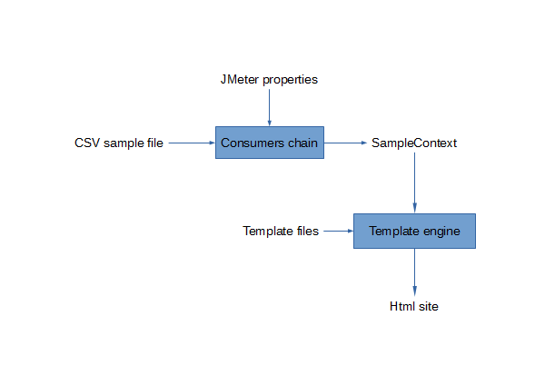
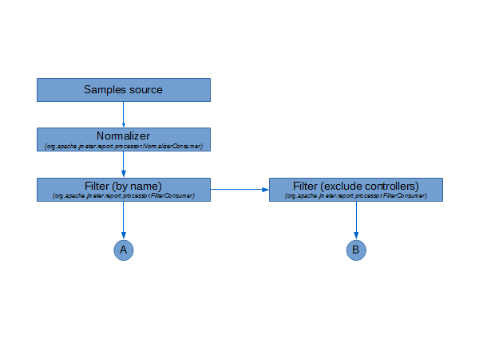

|
Dashboard generator
|
This document describes the architecture and operation of the
dashboard
generation engine.
|
1 Overview
|
|
1.1 Architecture
|
The dashboard generation engine is a modular feature based on
samples operation processus.
The processus can be represented by
the following diagram :

Figure 1 - Dashboard generation overview
|
In this view, you can see :
-
A source from where samples are produced (E.g: CSV file).
-
A chain of items, named consumers, that do operations
from
samples that go through the chain.
(E.g: Filtering, sorting,
calculation, ...)
-
An execution context, named sample context, where the results
of
consumers calculations are stored.
-
A set of items, named exporters, that use the content of the
sample context to generate a final result to the user (E.g. :
Html page generation).
|
|
|
1.2 Operation
|
Before producing samples, the source is associated with a sample
context that will be used to store the consumers results.
Then a
chain of consumers is built using JMeter properties
(prefixed by
jmeter.reportgenerator
) in order to enable the user to customize it.
When the source
emits a sample, it sends it to the first consumer
of
the chain.
The consumer can have different behaviors :
-
It can process the sample and sends it to the next
consumers.
-
It cannot process the sample, so it stores it and
continues to
receive other samples. When it can process the
stored samples, it
does and sends the whole to the next
consumers (E.g: sorting).
-
It can choose to discard the sample (E.g:
filtering).
When the source stops samples producing, consumers can publish a
result in the sample context.
The latter is send to the set of
exporters in order to create
results used by final user.
|
|
|
|
|
2 Consumers chain details
|

Figure 2 - Consumers chain
|
The chain begins with a normalizer consumer in charge of
standardizing the timestamp of each sample because JMeter allows
different timestamp formats (See :
jmeter.save.saveservice.timestamp_format
).
Then two consumers have to define the start time and end time of
the load tests.
At the same level a filter consumer keeps or
discards samples
depending on the
jmeter.reportgenerator.sample_filter
property.
Another filter is plugged after to discard controller
samples.
Depending on the property
jmeter.reportgenerator.graph.<graph_id>.exclude_controllers
, the graph consumer matching the graph_id identifier will be
set at
position A or B.
|
|
|
3 Limitations and Outlooks
|
-
Till now, there is only one sample source implementation which
is strongly coupled with the CSV file format, we should allow
other kinds of source by using a sample source interface.
-
To add customized graph, users must extend the
AbstractGraphConsumer or use one of the implementations provided
in
the package “org.apache.jmeter.report.processor.graph.impl”.
This
could be enhanced by making concrete the base class and give
public
access to additional properties (like selectors). But first
we have
to resolve the issue of shared properties (E.g : over time
graphs
must dispatch the same granularity property to the keys
selector
and time rate aggregator).
-
The chain building is dispatched between the
org.apache.jmeter.report.dashboard.ReporGenerator.generate method
and the implementation of the consumers. So the code in charge of
the building is splitted and furthermore some consumers can be
redundants and harm the performance of report generation, not
load testing.
E.g: Each LatencyVSRequestGraphConsumer and
ResponseTimeVSRequestGraphConsumer instances use an embedded
consumer that could be shared depending on granularity and
exclude_controllers properties.
So we should enable the consumers to define the chain they
require
and provide a single chain builder that processes these
chain
requirements to instantiate needed consumers on demand. I.e,
for
the same chain requirement declaration, the same consumer
instances
are used. Otherwise if the declaration differs a new
branch of
consumers is created.
-
The graphs (DOM elements) in the generated html page should be
dynamicaly build in order to match the graphs defined in jmeter
properties.
-
Some improvements can be done on the generated html pages :
-
Using a single page, and hide graphs depending on the
navigation menu selection.
-
Adding a loading animation when graphs are build or
refreshed.
-
Let the user determine if a graph is zoomable using a jmeter
property.
-
Using the jquery.plot.setData() method to handle series
activation/deactivation rather than rebuild the graph.
|
|
|
|
|